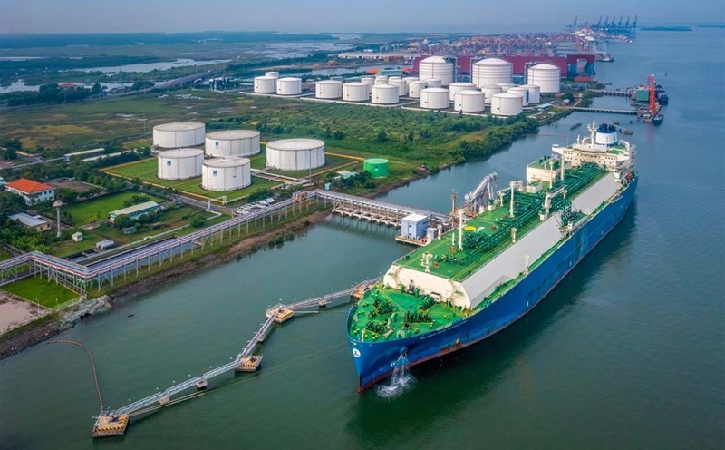

CHÍNH TRỊ
Phát huy vai trò dẫn dắt, tiên phong của doanh nghiệp nhà nước
Trong kỷ nguyên mới, cần có các giải pháp tổng thể, toàn diện, đột phá để doanh nghiệp nhà nước vững bước trên đường ray phát triển, tiếp tục phát huy vai trò dẫn dắt, tiên phong, góp phần hiện thực hóa mục tiêu phát triển đất nước nhanh, bền vững
Thứ Sáu, ngày 27/06/2025 - 06:27
Ngày 5/6 vừa qua, Văn phòng Chính phủ có Công văn số 4941/VPCP-ĐMDN, truyền đạt ý kiến Thủ tướng Chính phủ chỉ đạo Bộ Tài chính chủ trì, phối hợp hoàn thiện đề án, nghiên cứu, đề xuất ban hành nghị quyết mới của Bộ Chính trị về phát triển doanh nghiệp nhà nước để thật sự thúc đẩy, phát huy các nguồn lực của doanh nghiệp nhà nước trở thành lực lượng vật chất quan trọng, thực hiện vai trò chủ đạo của kinh tế nhà nước, góp phần phát triển đất nước trong kỷ nguyên mới.
Sau gần tám năm thực hiện Nghị quyết số 12-NQ/TW Hội nghị lần thứ 5 Ban Chấp hành Trung ương Đảng khóa XII về tiếp tục cơ cấu lại, đổi mới và nâng cao hiệu quả doanh nghiệp nhà nước, khu vực này đã có những bước phát triển mạnh mẽ, đáp ứng ngày càng tốt hơn yêu cầu phát triển, hội nhập kinh tế quốc tế của đất nước. Theo Bộ Tài chính, tính đến cuối năm 2024, cả nước có 473 doanh nghiệp do Nhà nước nắm giữ 100% vốn điều lệ, giảm 110 doanh nghiệp so cuối năm 2016. Tổng tài sản của các doanh nghiệp nhà nước đạt hơn 4 triệu tỷ đồng, tổng vốn đầu tư của Nhà nước tại doanh nghiệp đạt hơn 1,75 triệu tỷ đồng, tạo việc làm cho gần 1 triệu lao động.